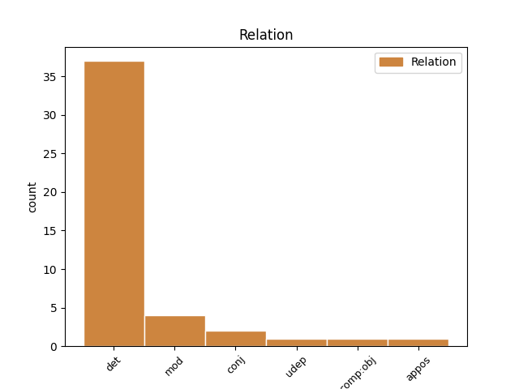
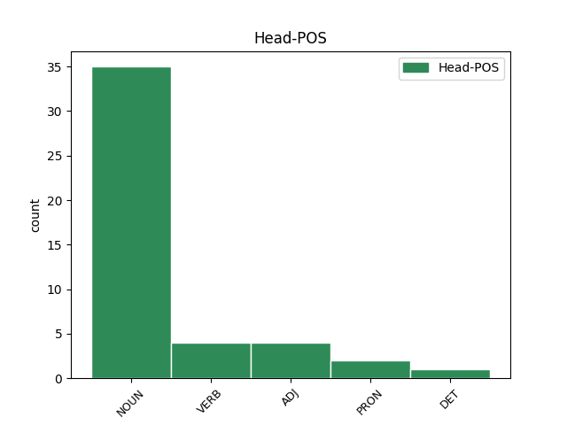
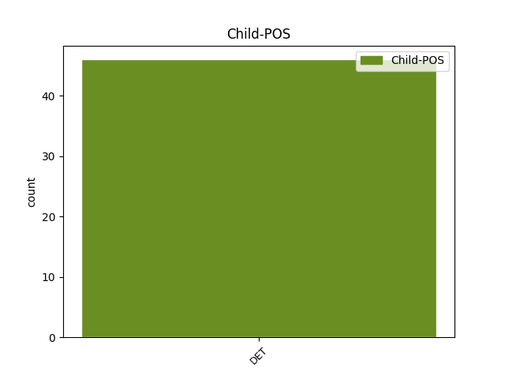

Distribution of features within this leaf



Agreement Rules sorted by frequency.
- When the dependent token is the determiner(det) of the head token, and the head token is NOUN and the dependent token is DET.
1 Sąjūdžio _ _ _ _ 0 _ _ _
2 ir _ _ _ _ 0 _ _ _
3 ankstyvosios _ _ _ _ 0 _ _ _
4 nepriklausomybės _ _ _ _ 0 _ _ _
5 laikais _ _ _ _ 0 _ _ _
6 kartais _ _ _ _ 0 _ _ _
7 atrodė _ _ _ _ 0 _ _ _
8 , _ _ _ _ 0 _ _ _
9 jog _ _ _ _ 0 _ _ _
10 tie tas DET DT Case=Nom|Gender=Masc|Number=Plur 11 det _ En=those
11 nesutarimai nesutarimas NOUN NN Case=Nom|Gender=Masc|Number=Plur|Polarity=Neg 0 _ _ _
12 pamažu _ _ _ _ 0 _ _ _
13 , _ _ _ _ 0 _ _ _
14 bet _ _ _ _ 0 _ _ _
15 sėkmingai _ _ _ _ 0 _ _ _
16 sprendžiasi _ _ _ _ 0 _ _ _
17 . _ _ _ _ 0 _ _ _
1 Mums _ _ _ _ 0 _ _ _
2 netelpa _ _ _ _ 0 _ _ _
3 galvoje _ _ _ _ 0 _ _ _
4 , _ _ _ _ 0 _ _ _
5 kad _ _ _ _ 0 _ _ _
6 pasaulis _ _ _ _ 0 _ _ _
7 gali _ _ _ _ 0 _ _ _
8 būti _ _ _ _ 0 _ _ _
9 ne _ _ _ _ 0 _ _ _
10 toks toks DET DT Case=Nom|Gender=Masc|Number=Sing 12 det _ En=such
11 jau _ _ _ _ 0 _ _ _
12 blogas blogas ADJ JJL Case=Nom|Definite=Ind|Degree=Pos|Gender=Masc|Number=Sing 0 _ _ _
13 , _ _ _ _ 0 _ _ _
14 o _ _ _ _ 0 _ _ _
15 pasaulinė _ _ _ _ 0 _ _ _
16 politika _ _ _ _ 0 _ _ _
17 nebūtinai _ _ _ _ 0 _ _ _
18 mums _ _ _ _ 0 _ _ _
19 žalinga _ _ _ _ 0 _ _ _
20 . _ _ _ _ 0 _ _ _
1 Jį _ _ _ _ 0 _ _ _
2 stiprina _ _ _ _ 0 _ _ _
3 nauji _ _ _ _ 0 _ _ _
4 istorijos _ _ _ _ 0 _ _ _
5 reiškiniai _ _ _ _ 0 _ _ _
6 – _ _ _ _ 0 _ _ _
7 didėjanti _ _ _ _ 0 _ _ _
8 nelygybė _ _ _ _ 0 _ _ _
9 , _ _ _ _ 0 _ _ _
10 naujoviška _ _ _ _ 0 _ _ _
11 beatodairiška _ _ _ _ 0 _ _ _
12 korupcija _ _ _ _ 0 _ _ _
13 , _ _ _ _ 0 _ _ _
14 pasaulinė _ _ _ _ 0 _ _ _
15 ekonominė _ _ _ _ 0 _ _ _
16 krizė _ _ _ _ 0 _ _ _
17 ir _ _ _ _ 0 _ _ _
18 dėl _ _ _ _ 0 _ _ _
19 to _ _ _ _ 0 _ _ _
20 atsiradusi _ _ _ _ 0 _ _ _
21 vartotojiškų _ _ _ _ 0 _ _ _
22 siekių _ _ _ _ 0 _ _ _
23 frustracija _ _ _ _ 0 _ _ _
24 ( _ _ _ _ 0 _ _ _
25 kaip _ _ _ _ 0 _ _ _
26 tik _ _ _ _ 0 _ _ _
27 dėl _ _ _ _ 0 _ _ _
28 tokių toks DET DT Case=Gen|Gender=Masc|Number=Plur 29 mod _ En=such
29 dalykų dalykas NOUN NN Case=Gen|Gender=Masc|Number=Plur 0 _ _ _
30 kadaise _ _ _ _ 0 _ _ _
31 atsirado _ _ _ _ 0 _ _ _
32 nacizmas _ _ _ _ 0 _ _ _
33 , _ _ _ _ 0 _ _ _
34 o _ _ _ _ 0 _ _ _
35 , _ _ _ _ 0 _ _ _
36 beje _ _ _ _ 0 _ _ _
37 , _ _ _ _ 0 _ _ _
38 ir _ _ _ _ 0 _ _ _
39 komunizmas _ _ _ _ 0 _ _ _
40 ) _ _ _ _ 0 _ _ _
41 . _ _ _ _ 0 _ _ _
1 Tuo _ _ _ _ 0 _ _ _
2 tarpu _ _ _ _ 0 _ _ _
3 tautai _ _ _ _ 0 _ _ _
4 kaip _ _ _ _ 0 _ _ _
5 tokiai _ _ _ _ 0 _ _ _
6 , _ _ _ _ 0 _ _ _
7 bent _ _ _ _ 0 _ _ _
8 po _ _ _ _ 0 _ _ _
9 Stalino _ _ _ _ 0 _ _ _
10 epochos _ _ _ _ 0 _ _ _
11 , _ _ _ _ 0 _ _ _
12 didelio _ _ _ _ 0 _ _ _
13 pavojaus _ _ _ _ 0 _ _ _
14 nebuvo _ _ _ _ 0 _ _ _
15 – _ _ _ _ 0 _ _ _
16 tą tas DET DT Case=Acc|Gender=Masc|Number=Sing 18 det _ En=this
17 neginčijamai _ _ _ _ 0 _ _ _
18 įrodo įrodyti VERB VBC Mood=Ind|Number=Sing|Person=3|Polarity=Pos|Reflex=No|Tense=Past|VerbForm=Fin|Voice=Act 0 _ _ _
19 faktas _ _ _ _ 0 _ _ _
20 , _ _ _ _ 0 _ _ _
21 kad _ _ _ _ 0 _ _ _
22 tauta _ _ _ _ 0 _ _ _
23 ir _ _ _ _ 0 _ _ _
24 kalba _ _ _ _ 0 _ _ _
25 išliko _ _ _ _ 0 _ _ _
26 neišnykusios _ _ _ _ 0 _ _ _
27 , _ _ _ _ 0 _ _ _
28 nes _ _ _ _ 0 _ _ _
29 nesumažėjusios _ _ _ _ 0 _ _ _
30 per _ _ _ _ 0 _ _ _
31 penkiasdešimt _ _ _ _ 0 _ _ _
32 su _ _ _ _ 0 _ _ _
33 viršum _ _ _ _ 0 _ _ _
34 metų _ _ _ _ 0 _ _ _
35 . _ _ _ _ 0 _ _ _
1 Kitas _ _ _ _ 0 _ _ _
2 dalykas _ _ _ _ 0 _ _ _
3 – _ _ _ _ 0 _ _ _
4 tavo _ _ _ _ 0 _ _ _
5 mentalitetas _ _ _ _ 0 _ _ _
6 ir _ _ _ _ 0 _ _ _
7 moralė _ _ _ _ 0 _ _ _
8 : _ _ _ _ 0 _ _ _
9 juos _ _ _ _ 0 _ _ _
10 mes _ _ _ _ 0 _ _ _
11 suksime _ _ _ _ 0 _ _ _
12 tokia _ _ _ _ 0 _ _ _
13 linkme _ _ _ _ 0 _ _ _
14 , _ _ _ _ 0 _ _ _
15 kokia koks DET WDT Case=Nom|Gender=Fem|Number=Sing 17 udep _ En=what
16 mums _ _ _ _ 0 _ _ _
17 paranki parakti VERB PRED Mood=Ind|Number=Sing|Person=2|Polarity=Pos|Reflex=No|Tense=Pres|VerbForm=Fin|Voice=Act 0 _ _ _
18 . _ _ _ _ 0 _ _ _
1 Šį šis PRON DT Case=Acc|Gender=Masc|Number=Sing 0 _ _ _
2 bei _ _ _ _ 0 _ _ _
3 tą tas DET DT Case=Acc|Gender=Masc|Number=Sing 1 conj _ En=that
4 būtų _ _ _ _ 0 _ _ _
5 galima _ _ _ _ 0 _ _ _
6 pasakyti _ _ _ _ 0 _ _ _
7 ir _ _ _ _ 0 _ _ _
8 apie _ _ _ _ 0 _ _ _
9 brolius _ _ _ _ 0 _ _ _
10 pabaltiečius _ _ _ _ 0 _ _ _
11 . _ _ _ _ 0 _ _ _
1 Tačiau _ _ _ _ 0 _ _ _
2 nesutinku _ _ _ _ 0 _ _ _
3 , _ _ _ _ 0 _ _ _
4 kad _ _ _ _ 0 _ _ _
5 dera _ _ _ _ 0 _ _ _
6 mylėti _ _ _ _ 0 _ _ _
7 tik _ _ _ _ 0 _ _ _
8 tokią _ _ _ _ 0 _ _ _
9 tėvynę _ _ _ _ 0 _ _ _
10 , _ _ _ _ 0 _ _ _
11 tautą _ _ _ _ 0 _ _ _
12 ir _ _ _ _ 0 _ _ _
13 lietuvybę _ _ _ _ 0 _ _ _
14 , _ _ _ _ 0 _ _ _
15 kokias kokis DET WDT Case=Acc|Gender=Fem|Number=Plur 16 comp:obj _ En=what
16 įsivaizduoja įsivaizduoti VERB VBC Mood=Ind|Number=Plur|Person=3|Polarity=Pos|Reflex=Yes|Tense=Pres|VerbForm=Fin|Voice=Act 0 _ _ _
17 daugelis _ _ _ _ 0 _ _ _
18 mūsų _ _ _ _ 0 _ _ _
19 filosofų _ _ _ _ 0 _ _ _
20 ir _ _ _ _ 0 _ _ _
21 nefilosofų _ _ _ _ 0 _ _ _
22 – _ _ _ _ 0 _ _ _
23 atseit _ _ _ _ 0 _ _ _
24 , _ _ _ _ 0 _ _ _
25 mylėti _ _ _ _ 0 _ _ _
26 ir _ _ _ _ 0 _ _ _
27 baigta _ _ _ _ 0 _ _ _
28 , _ _ _ _ 0 _ _ _
29 jokiu _ _ _ _ 0 _ _ _
30 būdu _ _ _ _ 0 _ _ _
31 jų _ _ _ _ 0 _ _ _
32 nereflektuoti _ _ _ _ 0 _ _ _
33 . _ _ _ _ 0 _ _ _
1 Turi _ _ _ _ 0 _ _ _
2 atsirasti _ _ _ _ 0 _ _ _
3 nauja _ _ _ _ 0 _ _ _
4 valstybinė _ _ _ _ 0 _ _ _
5 ir _ _ _ _ 0 _ _ _
6 tautinė _ _ _ _ 0 _ _ _
7 sąmonė sąmonė NOUN NN Case=Nom|Gender=Fem|Number=Sing 0 _ _ _
8 , _ _ _ _ 0 _ _ _
9 tokia toks DET DT Case=Nom|Gender=Fem|Number=Sing 7 appos _ En=these
10 kaip _ _ _ _ 0 _ _ _
11 dabartinių _ _ _ _ 0 _ _ _
12 vokiečių _ _ _ _ 0 _ _ _
13 , _ _ _ _ 0 _ _ _
14 anglų _ _ _ _ 0 _ _ _
15 ar _ _ _ _ 0 _ _ _
16 prancūzų _ _ _ _ 0 _ _ _
17 , _ _ _ _ 0 _ _ _
18 o _ _ _ _ 0 _ _ _
19 ne _ _ _ _ 0 _ _ _
20 tokia _ _ _ _ 0 _ _ _
21 , _ _ _ _ 0 _ _ _
22 kaip _ _ _ _ 0 _ _ _
23 Radio _ _ _ _ 0 _ _ _
24 Maryja _ _ _ _ 0 _ _ _
25 lenkų _ _ _ _ 0 _ _ _
26 arba _ _ _ _ 0 _ _ _
27 Dugino _ _ _ _ 0 _ _ _
28 bei _ _ _ _ 0 _ _ _
29 Prochanovo _ _ _ _ 0 _ _ _
30 rusų _ _ _ _ 0 _ _ _
31 . _ _ _ _ 0 _ _ _
1 Turi _ _ _ _ 0 _ _ _
2 atsirasti _ _ _ _ 0 _ _ _
3 nauja _ _ _ _ 0 _ _ _
4 valstybinė _ _ _ _ 0 _ _ _
5 ir _ _ _ _ 0 _ _ _
6 tautinė _ _ _ _ 0 _ _ _
7 sąmonė _ _ _ _ 0 _ _ _
8 , _ _ _ _ 0 _ _ _
9 tokia toks DET DT Case=Nom|Gender=Fem|Number=Sing 0 _ _ _
10 kaip _ _ _ _ 0 _ _ _
11 dabartinių _ _ _ _ 0 _ _ _
12 vokiečių _ _ _ _ 0 _ _ _
13 , _ _ _ _ 0 _ _ _
14 anglų _ _ _ _ 0 _ _ _
15 ar _ _ _ _ 0 _ _ _
16 prancūzų _ _ _ _ 0 _ _ _
17 , _ _ _ _ 0 _ _ _
18 o _ _ _ _ 0 _ _ _
19 ne _ _ _ _ 0 _ _ _
20 tokia toks DET DT Case=Nom|Gender=Fem|Number=Sing 9 conj _ En=these|SpaceAfter=No
21 , _ _ _ _ 0 _ _ _
22 kaip _ _ _ _ 0 _ _ _
23 Radio _ _ _ _ 0 _ _ _
24 Maryja _ _ _ _ 0 _ _ _
25 lenkų _ _ _ _ 0 _ _ _
26 arba _ _ _ _ 0 _ _ _
27 Dugino _ _ _ _ 0 _ _ _
28 bei _ _ _ _ 0 _ _ _
29 Prochanovo _ _ _ _ 0 _ _ _
30 rusų _ _ _ _ 0 _ _ _
31 . _ _ _ _ 0 _ _ _
1 Tapatinti _ _ _ _ 0 _ _ _
2 ją _ _ _ _ 0 _ _ _
3 su _ _ _ _ 0 _ _ _
4 TSRS _ _ _ _ 0 _ _ _
5 yra _ _ _ _ 0 _ _ _
6 piktybiška _ _ _ _ 0 _ _ _
7 demagogija _ _ _ _ 0 _ _ _
8 – _ _ _ _ 0 _ _ _
9 šiaip _ _ _ _ 0 _ _ _
10 ar _ _ _ _ 0 _ _ _
11 taip _ _ _ _ 0 _ _ _
12 , _ _ _ _ 0 _ _ _
13 kiekvienas kiekvienas DET DT Case=Nom|Gender=Masc|Number=Sing 15 mod _ En=each
14 lietuvis _ _ _ _ 0 _ _ _
15 žino žinoti VERB VBC Mood=Ind|Number=Sing|Person=3|Polarity=Pos|Reflex=No|Tense=Pres|VerbForm=Fin|Voice=Act 0 _ _ _
16 , _ _ _ _ 0 _ _ _
17 kuo _ _ _ _ 0 _ _ _
18 skiriasi _ _ _ _ 0 _ _ _
19 Kolyma _ _ _ _ 0 _ _ _
20 nuo _ _ _ _ 0 _ _ _
21 Dublino _ _ _ _ 0 _ _ _
22 ar _ _ _ _ 0 _ _ _
23 Londono _ _ _ _ 0 _ _ _
24 . _ _ _ _ 0 _ _ _
1 Į _ _ _ _ 0 _ _ _
2 tai _ _ _ _ 0 _ _ _
3 man _ _ _ _ 0 _ _ _
4 bus _ _ _ _ 0 _ _ _
5 atsakyta _ _ _ _ 0 _ _ _
6 : _ _ _ _ 0 _ _ _
7 „ _ _ _ _ 0 _ _ _
8 čia _ _ _ _ 0 _ _ _
9 ne _ _ _ _ 0 _ _ _
10 mes mes PRON PRP Case=Nom|Number=Plur|Person=1 0 _ _ _
11 vieni vienas DET DT Case=Nom|Gender=Masc|Number=Plur 10 mod _ En=single
12 kalti _ _ _ _ 0 _ _ _
13 “ _ _ _ _ 0 _ _ _
14 . _ _ _ _ 0 _ _ _
No disagree examples found.